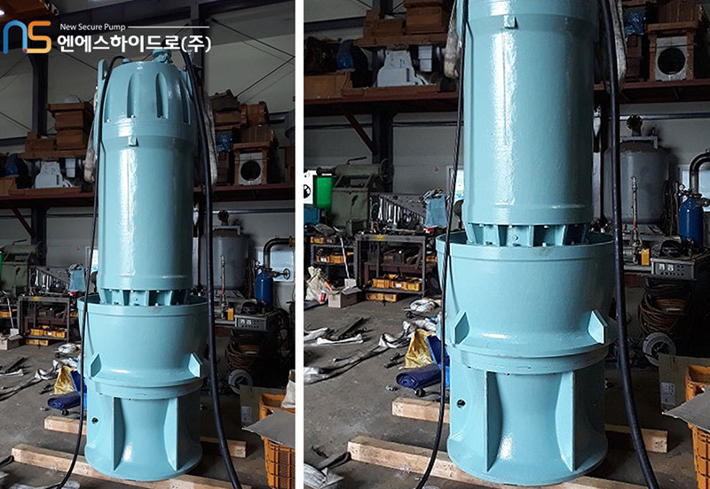
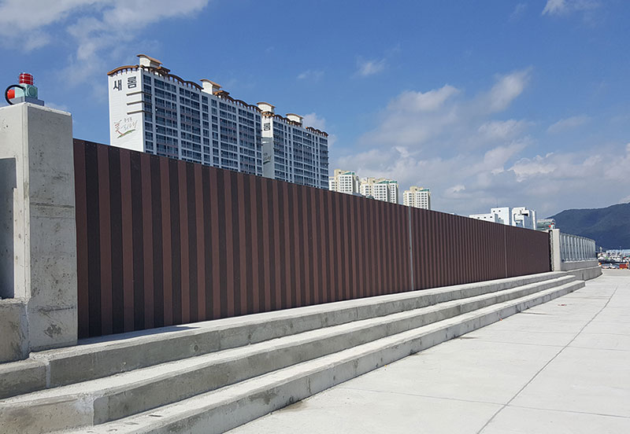
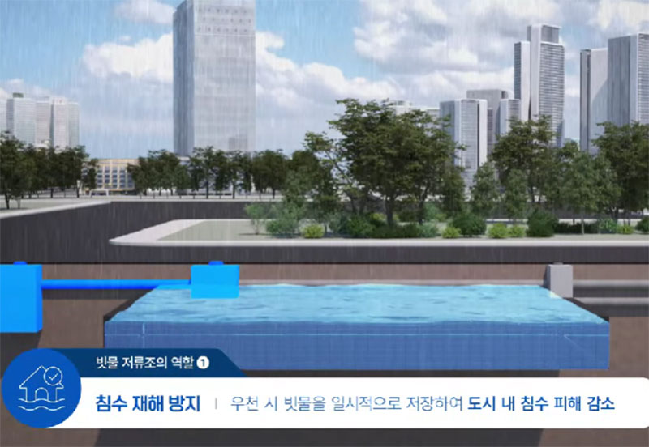
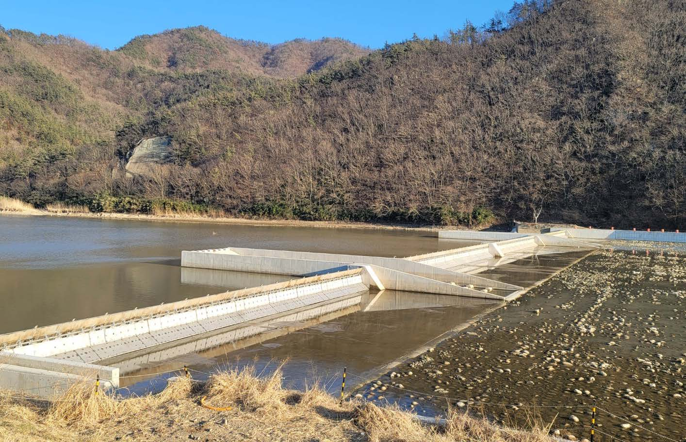

기후위기가 일상이 된 시대, 폭우는 더 이상 예외적 재난이 아니다. 기준 설계 강우량을 훌쩍 넘는 집중호우가 언제 어떻게 반복될지 예측하기 힘든 상황에서, 도시 인프라의 근본적인 내구성과 대응 체계를 재점검해야 한다는 목소리는 매년 높아지고 있다. 배수 시스템의 고장 예방부터 침수 차단, 빗물 저류, 수문 제어, 재난 현장 감시, 개인 생존 대비까지. 극한 호우의 피해를 줄이기 위한 기술과 제품들을 소개한다.
배수펌프 고장, 홍수의 숨은 방아쇠
집중호우 시 도시 침수 피해의 상당 부분은 빗물펌프장 장비의 고장에서 비롯된다. 배수펌프장에 설치된 수중 펌프는 유입된 이물질에 의해 가이드베인*이 손상되면 배수 효율이 급격히 떨어지고 결국 펌프 정지로 이어진다. 엔에스하이드로가 개발한 이 기술은 가이드베인 하단부에 보호캡을 설치해 단단한 이물질로부터 가이드베인을 보호하고 내구성을 대폭 향상시켰다. 동시에 보호캡 적용을 통해 효율 저하 문제도 해결, 장비 수명과 배수 성능을 동시에 확보한 재난안전신기술이다.
*가이드베인: 기계 장치 내부에서 물, 가스 등 유체의 흐름을 원하는 방향으로 정렬하고 양을 조절하는 안내 날개

순식간에 세우고 단단히 잠근다
도심 침수는 특정 지점의 방어 실패에서 시작되는 경우가 많다. 지하 주차장 입구, 지하상가 진입로, 건물 출입구 등 물이 한 번 유입되면 순식간에 넓은 공간이 수몰된다. 해전산업의 슬라이딩 락킹 시스템 차수벽은 유압 실린더를 평소에는 접어 격납해 공간 활용성을 높이고, 필요 시 즉각 기립·전개되는 구조다. 구동부와 지지대를 분리 구성한 슬라이딩 락킹 시스템과 다중 지지대 구조를 결합해 구조적 안전성을 확보했다.
도시 지하에 빗물을 담다
폭우 시 하수관으로 순간적으로 집중되는 우수 유량을 분산·저류하는 것은 도시 침수 예방의 핵심 전략이다. 그러나 기존 저류조는 시공 복잡성과 공간 확보의 어려움으로 소규모 지역에 적용하기 어려운 경우가 많았다. 한국수안의 이 공법은 PP(폴리프로필렌) 소재 모듈식 부품을 조립·결합하는 방식으로, 지지기둥과 내부 이동 통로를 갖춘 박스형 구조를 지하에 설치한다. 모듈식 구조 덕분에 설치 공간과 용량에 맞춰 자유롭게 조합·확장이 가능하며, 내부 이동 통로가 있어 유지관리도 용이하다.


홍수와 가뭄을 동시에 관리하는 스마트 가동보
집중호우와 가뭄이 반복되는 기후 환경에서 하천 수위를 안정적으로 관리하는 기술의 중요성이 커지고 있다. 가동보는 평상시에는 물을 저장해 농업용수와 생활용수를 확보하고, 홍수 시에는 신속하게 문을 개방해 하천 범람을 막는 핵심 방재시설이다. 우진산업이 개발한 재난안전제품은 유압실린더와 유압 배관을 일체형으로 설계해 유지관리 효율을 크게 높였다. 기존에는 하천 내부에 설치된 유압장치가 토사와 자갈, 부유물 등에 노출돼 점검과 보수가 어려웠지만, 상단 배관 구조를 적용해 임시 물막이 공사 없이도 유지보수가 가능하도록 개선했다. 홍수 때는 수위를 신속하게 조절해 침수 피해를 줄이고 평상시에는 안정적인 수자원 확보와 친수공간 조성에도 활용할 수 있다.